Configuration des capteurs analogiques
Analog Sensor Configuration est la zone UI OpenSprinklerPro pour définir les sources de capteurs et utiliser leurs valeurs dans l’automatisation de l’arrosage. Elle s’ouvre depuis le menu inférieur avec Analog Sensor Configuration.

Pages liées : Automatisation capteurs et monitors, Capteurs FYTA, Extension OpenSprinklerPro, addendum API et plateformes.
Définitions de capteurs
La première section définit la liste des capteurs. Chaque ligne contient numéro, nom, valeur actuelle et état actif. Add Sensor ouvre l’éditeur d’un nouveau capteur; les capteurs existants se modifient en touchant leur nom.

Champs de l’éditeur
| Champ | Signification |
|---|---|
| Numéro, nom et groupe | Identifient le capteur dans les listes, graphiques, ajustements de programme et monitors. Les groupes servent à trier et filtrer des capteurs liés. |
| Type | Sélectionne le pilote ou la source virtuelle. Le type détermine les champs supplémentaires affichés. |
| Unité et format | Définissent l’affichage, la journalisation et les comparaisons. Choisissez une unité correspondant à la valeur physique ou à la source externe. |
| Intervalle, log et affichage | L’intervalle règle la fréquence de lecture. Log active l’historique pour les graphiques; l’affichage contrôle la visibilité dans les vues UI. |
| Bus, adresse et canal | Utilisés par RS485/Modbus, ASB et les entrées analogiques OSPi pour choisir bus matériel, adresse d’appareil ou canal analogique. |
| Mise à l’échelle utilisateur | Pour les capteurs analogiques personnalisés, convertit la tension/valeur ADC brute en valeur finale. |
| Topic MQTT et filtre | Les capteurs MQTT s’abonnent à un topic et peuvent extraire une valeur d’un JSON ou d’un texte. |
| Liste de capteurs sources | Les groupes calculent une nouvelle valeur à partir des capteurs sélectionnés. Les sources doivent avoir des unités compatibles. |
RS485 / Modbus
Ces types servent aux capteurs câblés sur bus RS485 ou à un appareil Modbus RTU générique. Configurez bus, adresse esclave, registre/canal et intervalle selon l’appareil connecté.
| Type de capteur | Explication |
|---|---|
| Truebner SMT100 RS485 Modbus, mode humidité | Lit l’humidité du sol d’un Truebner SMT100 via RS485/Modbus. À utiliser pour les décisions d’arrosage basées sur la teneur volumique en eau. |
| Truebner SMT100 RS485 Modbus, mode température | Lit le canal température du SMT100 pour journalisation ou règles de monitor. |
| Truebner SMT100 RS485 Modbus, mode permittivité | Lit la permittivité diélectrique du SMT100 pour diagnostic ou modèles de sol avancés. |
| Truebner TH100 RS485 Modbus, mode humidité | Lit l’humidité relative d’un Truebner TH100, par exemple en serre ou pour l’ambiance. |
| Truebner TH100 RS485 Modbus, mode température | Lit la température du TH100 pour surveiller l’air ou la zone d’installation. |
| Capteur générique RS485/MODBUS RTU | Lit une valeur Modbus RTU configurable sur un équipement tiers. Adresse, registre, format de données et échelle doivent suivre le manuel. |
Carte de capteurs analogiques (ASB)
Les types ASB lisent les entrées tension de la carte analogique OpenSprinkler et les convertissent en valeur physique. Sélectionnez le bon canal et uniquement un mode adapté au câblage et à la tension d’alimentation.
| Type de capteur | Explication |
|---|---|
| ASB - mode tension 0..5V | Retourne directement la tension d’entrée ASB mesurée entre 0 et 5 V. Utile pour l’étalonnage ou les capteurs avec conversion externe. |
| ASB - 0..3,3V vers 0..100% | Convertit une tension de 0 à 3,3 V en pourcentage pour signaux analogiques génériques. |
| ASB - SMT50 mode humidité | Convertit la sortie analogique d’un Truebner SMT50 en humidité du sol. |
| ASB - SMT50 mode température | Convertit la sortie température du SMT50. |
| ASB - SMT100 analogique mode humidité | Convertit la sortie humidité analogique d’un Truebner SMT100. |
| ASB - SMT100 analogique mode température | Convertit la sortie température analogique d’un Truebner SMT100. |
| ASB - Vegetronix VH400 | Convertit la sortie du Vegetronix VH400 en humidité du sol. |
| ASB - Vegetronix THERM200 | Convertit la sortie du Vegetronix THERM200 en température. |
| ASB - Vegetronix AquaPlumb | Convertit la sortie Vegetronix AquaPlumb pour présence d’eau ou mesure de niveau. |
| ASB - capteur défini par l’utilisateur | Applique une mise à l’échelle personnalisée pour les capteurs sans conversion intégrée. Définissez unité, format et conversion avant toute automatisation. |
Entrées analogiques OSPi
Ces types concernent les installations OSPi/Raspberry Pi avec entrées analogiques. Ils ne s’appliquent pas aux contrôleurs ESP seuls sans matériel analogique correspondant.
| Type de capteur | Explication |
|---|---|
| Entrée analogique OSPi - mode tension 0..3,3V | Retourne directement la tension mesurée entre 0 et 3,3 V. |
| Entrée analogique OSPi - 0..3,3V vers 0..100% | Convertit une entrée 0 à 3,3 V en pourcentage pour capteurs analogiques génériques. |
| Entrée analogique OSPi - SMT50 mode humidité | Convertit la sortie humidité d’un SMT50 connecté à OSPi. |
| Entrée analogique OSPi - SMT50 mode température | Convertit la sortie température d’un SMT50 connecté à OSPi. |
| Température interne Raspberry Pi | Lit la température CPU du Raspberry Pi. Utile comme diagnostic thermique d’un boîtier OSPi. |
| Température interne ESP32 | Lit le capteur de température interne ESP32 lorsque disponible. À considérer comme diagnostic contrôleur, pas comme température ambiante étalonnée. |
Sources sans fil, cloud et distantes
Ces types reçoivent des valeurs depuis radios, services cloud, MQTT ou un autre contrôleur OpenSprinkler. Vérifiez la disponibilité plateforme : Zigbee et BLE exigent des builds ESP32 compatibles, FYTA exige des identifiants cloud, MQTT exige un broker.
| Type de capteur | Explication |
|---|---|
| Capteur Zigbee | Associe une valeur publiée par un appareil Zigbee appairé, comme température, humidité ou humidité du sol. Choisissez l’appareil et la mesure exposée. |
| Capteur BLE | Lit un capteur Bluetooth Low Energy pris en charge. Réglez intervalle de scan et appareil pour équilibrer fraîcheur et charge radio. |
| Capteur d’humidité FYTA | Importe l’humidité du sol d’un capteur plante FYTA après configuration FYTA. |
| Capteur de température FYTA | Importe la température d’un capteur plante FYTA après configuration FYTA. |
| Capteur d’humidité Gardena | Importe l’humidité du sol d’un capteur smart Gardena via l’API cloud Gardena. |
| Capteur de température Gardena | Importe la température d’un capteur smart Gardena via l’API cloud Gardena. |
| Abonnement MQTT | S’abonne à un topic MQTT et analyse la valeur reçue. Configurez topic, filtre JSON/texte optionnel, unité et comportement en cas de timeout. |
| Capteur JSON distant | Interroge n’importe quel point de terminaison JSON HTTP/HTTPS externe et extrait la valeur à l’aide d’une recherche de chemin. |
| Capteur OpenSprinkler distant | Lit un capteur depuis un autre contrôleur OpenSprinkler. Configurez l’URL/le contrôleur distant et le numéro du capteur source. |
Données météo
Les capteurs météo exposent les valeurs déjà connues par le contrôleur via le service météo configuré. Choisissez le type d’unité correspondant à vos règles et graphiques.
| Type de capteur | Explication |
|---|---|
| Données météo - température (°F) | Température du service météo en degrés Fahrenheit. |
| Données météo - température (°C) | Température du service météo en degrés Celsius. |
| Données météo - humidité (%) | Humidité relative du service météo en pourcentage. |
| Données météo - précipitations (inch) | Précipitations du service météo en pouces. |
| Données météo - précipitations (mm) | Précipitations du service météo en millimètres. |
| Données météo - vent (mph) | Vitesse du vent en miles par heure. |
| Données météo - vent (kmh) | Vitesse du vent en kilomètres par heure. |
| Données météo - ETO | Évapotranspiration de référence utilisée comme contexte d’arrosage. |
| Données météo - rayonnement | Rayonnement solaire de la source météo, si disponible. |
Capteurs de groupe
Les groupes créent une valeur agrégée à partir d’autres capteurs. Choisissez des sources avec unités et intervalles comparables pour obtenir un résultat utile.
| Type de capteur | Explication |
|---|---|
| Groupe de capteurs avec valeur min | Retourne la plus petite valeur actuelle parmi les sources sélectionnées. |
| Groupe de capteurs avec valeur max | Retourne la plus grande valeur actuelle parmi les sources sélectionnées. |
| Groupe de capteurs avec valeur moyenne | Retourne la moyenne arithmétique des sources sélectionnées. |
| Groupe de capteurs avec valeur somme | Retourne la somme des sources sélectionnées, par exemple pluie cumulée ou valeurs de type débit. |
Diagnostics
Les capteurs de diagnostic rendent l’état du contrôleur disponible dans le même système de graphiques et monitors que les capteurs environnementaux.
| Type de capteur | Explication |
|---|---|
| Mémoire libre | Indique la RAM actuellement libre. Des monitors peuvent détecter pression mémoire ou fuites lors de tests longs. |
| Stockage libre | Indique l’espace de stockage restant lorsque la plateforme le prend en charge. Utile avant que logs ou configuration ne remplissent le système de fichiers. |
Ajustements de programme
Les Program Adjustments adaptent la durée d’arrosage d’un programme à partir d’une valeur capteur. Exemples typiques : réduire l’arrosage quand le sol est humide ou l’augmenter quand la température est élevée.
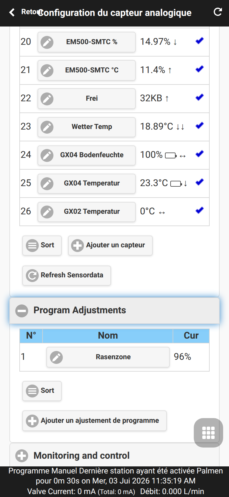
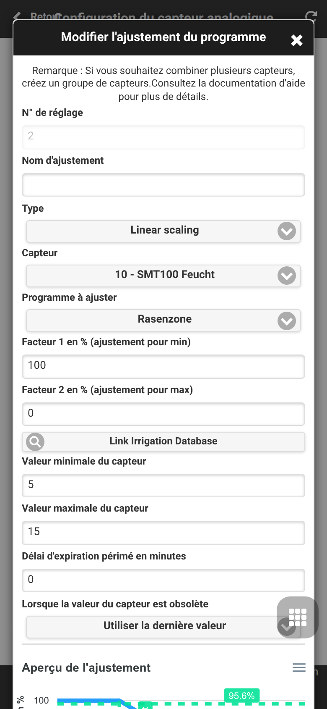
Modèle d’ajustement
Chaque ajustement relie un capteur à un programme d’arrosage et calcule un modificateur en pourcentage. Activez d’abord la journalisation du capteur et vérifiez sa plage avant d’influencer l’arrosage réel.
Types d’ajustement
| Type | Usage |
|---|---|
LINEAR |
Échelle continue entre deux points bas et haut configurés. |
DIGITAL_MIN |
Déclenche une réduction ou coupure binaire quand le capteur est sous un seuil. |
DIGITAL_MAX |
Déclenche une réduction ou coupure binaire quand le capteur est au-dessus d’un seuil. |
DIGITAL_MINMAX |
Applique un comportement binaire à l’intérieur ou à l’extérieur d’une plage. |
Voir Automatisation capteurs et monitors pour le modèle fonctionnel et addendum API pour l’automatisation REST/MCP.
Monitors et alertes locales
Monitoring and Control crée des règles de seuil et de logique à partir des capteurs. Les monitors peuvent générer des avertissements locaux, alimenter les notifications et combiner des conditions comme « sol sec » et « créneau du matin ».
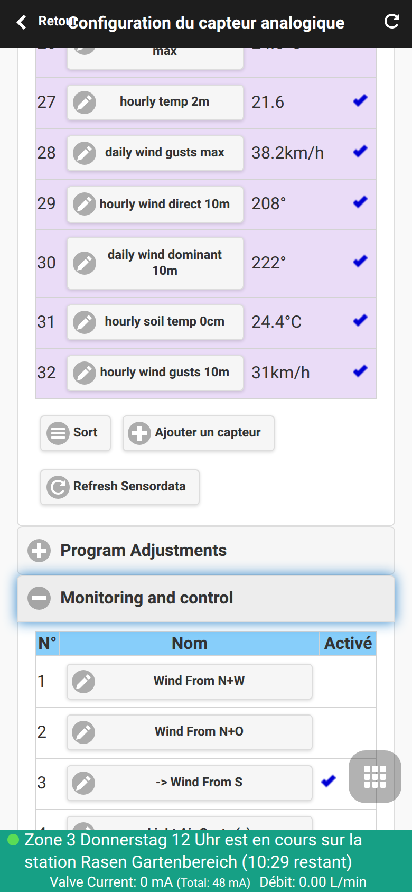
Champs de l’éditeur (tous les types de monitors)
Chaque monitor possède les champs suivants, indépendamment de son type. La sélection du Type fait apparaître les champs spécifiques décrits plus bas.
| Champ | Signification |
|---|---|
| N° de monitor / Nom du monitor | Numéro unique et nom parlant affiché dans les listes et les alertes. |
| Type | Sélectionne le type de règle. Le changer remplace les champs spécifiques. |
| Programme à démarrer / Zone à démarrer | Action tant que le monitor est actif : démarrer un programme ou une seule zone. Laisser sur Désactivé pour un monitor purement d’alerte ou logique. |
| Durée max (s) | Durée d’arrosage maximale de la zone démarrée par activation. |
| Priorité | Gravité de la notification générée (Basse / Moyenne / Haute). |
| Réinitialiser après (s) | Supérieur à 0 : l’état actif est réinitialisé automatiquement après ce délai (comportement périodique/impulsionnel). 0 conserve l’état jusqu’à ce que la condition disparaisse. |
| Mode de sortie | Démarrer et arrêter pilote la sortie dans les deux sens. Uniquement couper n’autorise le monitor qu’à couper la zone/le programme (par ex. un arrêt d’urgence), jamais à le démarrer. |
| Failsafe après (s) | Si le capteur référencé ne fournit pas de données valides pendant ce délai, l’état de repli est appliqué. 0 désactive le repli et conserve le dernier état. |
| État de repli (failsafe) | État de sortie (Marche/Arrêt) forcé lorsque les données du capteur sont considérées comme obsolètes. |
| Afficher sur la page d’accueil | Affiche le monitor et son état sur la page principale de l’application. |
Types de monitors
Minimum (MIN)
S’active lorsqu’une valeur de capteur descend à ou sous un seuil — par exemple pour remplir une citerne quand le niveau est bas. Valeur d’activation et Valeur de désactivation forment une bande d’hystérésis afin d’éviter les commutations répétées autour d’une seule valeur.
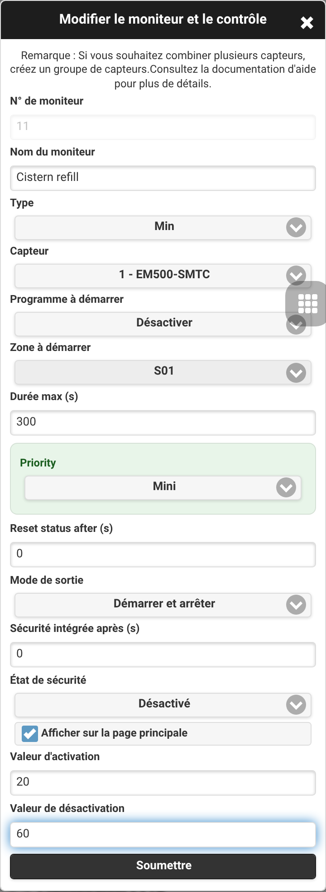
Maximum (MAX)
S’active lorsqu’une valeur de capteur atteint ou dépasse un seuil — par exemple une alarme de température élevée ou de débordement. Utilise la même bande d’hystérésis (Valeur d’activation / Valeur de désactivation) que le type MIN.
Capteur numérique 1/2 (SN 1/2)
Reflète l’état de l’entrée numérique pluie/sol intégrée (Capteur 1 ou Capteur 2). Cochez inverse pour réagir à l’état opposé.
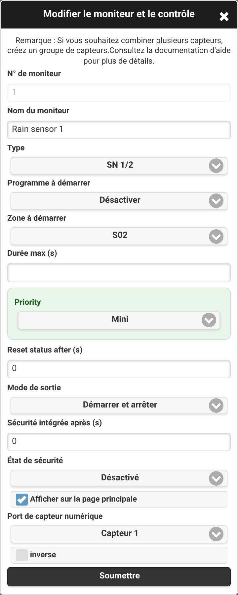
Définir capteur numérique (SET SN 1/2)
Pilote l’état virtuel du capteur numérique 1 ou 2 à partir d’un autre monitor. Une condition calculée peut ainsi agir comme un capteur pluie/sol physique pour le planificateur.
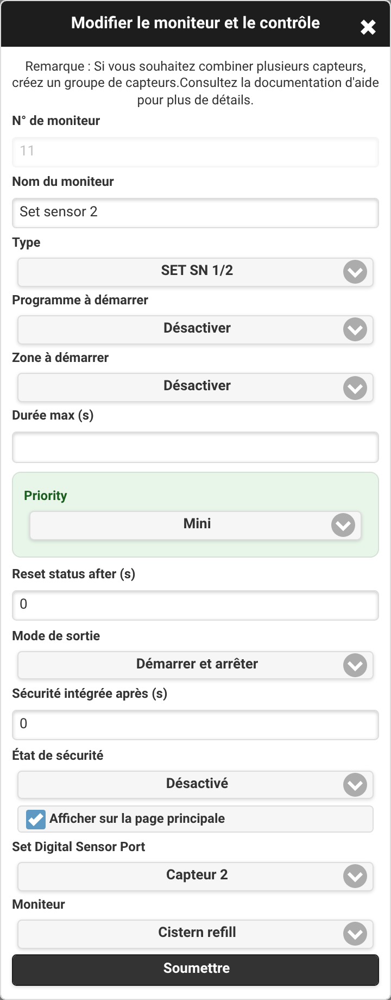
ET (AND)
Actif uniquement lorsque tous les monitors sources sélectionnés sont actifs. Chacune des quatre entrées peut être inversée individuellement via sa case inverse.
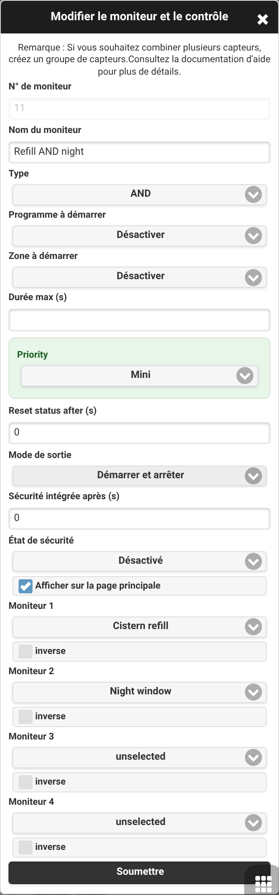
OU (OR)
Actif dès qu’au moins un des monitors sources sélectionnés est actif. Les entrées peuvent être inversées individuellement.
OU exclusif (XOR)
Actif lorsqu’un nombre impair des entrées sélectionnées est actif (ou exclusif). Utile pour détecter une divergence entre deux conditions.
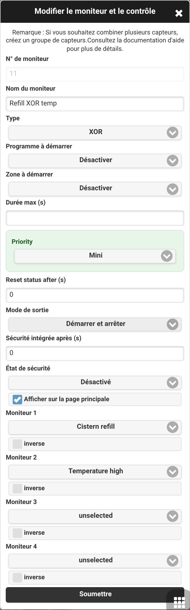
NON (NOT)
Inverse l’état d’un seul monitor source.
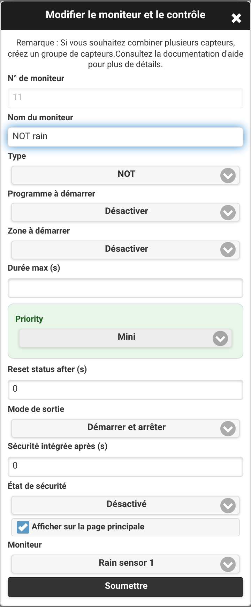
Fenêtre horaire (TIME)
Actif pendant une plage horaire quotidienne les jours sélectionnés. Renseignez De et À (une plage qui traverse minuit est prise en charge) et cochez les jours de la semaine.
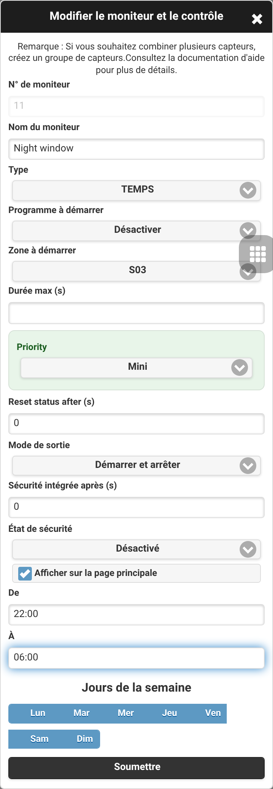
Distant (REMOTE)
Reflète l’état actif d’un monitor sur un autre contrôleur OpenSprinkler. Saisissez le N° de monitor distant, l’IP et le Port du contrôleur.
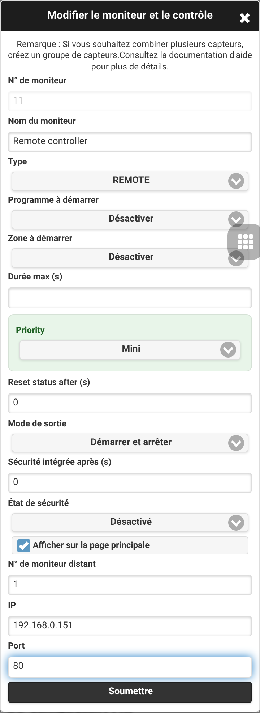
Voir Automatisation capteurs et monitors pour le modèle fonctionnel.
Graphiques et données capteur
Sensor Chart affiche les valeurs journalisées. Utilisez-le pour vérifier la plausibilité des mesures avant les ajustements ou monitors. L’UI peut aussi télécharger les logs ou ouvrir la table de données.
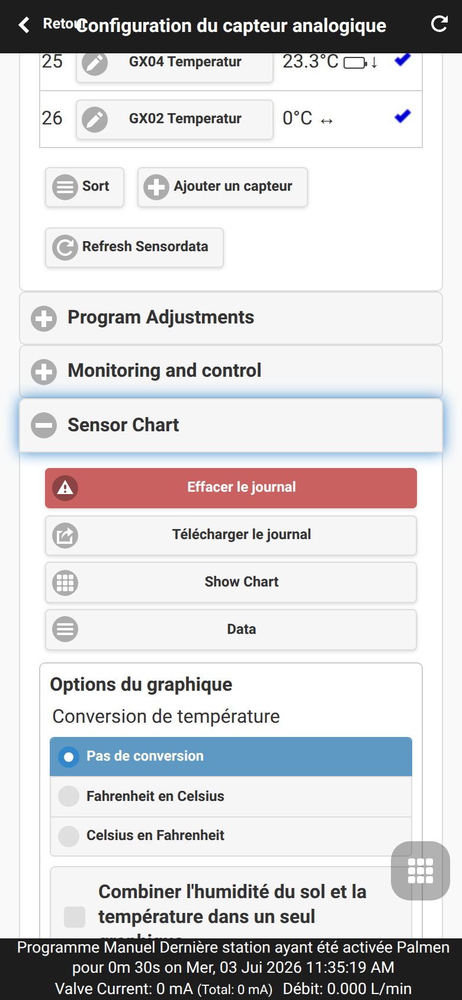
Lire les graphiques
Cherchez échantillons manquants, pics inattendus et erreurs d’unité. Comparez les capteurs liés du même groupe avant toute décision automatique.
Télécharger les données
Les données journalisées peuvent être téléchargées ou consultées en tableau. C’est utile pour l’étalonnage, le diagnostic et le partage de traces.
Configuration FYTA
FYTA Setup stocke le jeton API ou les identifiants FYTA et mappe les capteurs de plantes vers OpenSprinkler. Voir Capteurs FYTA.
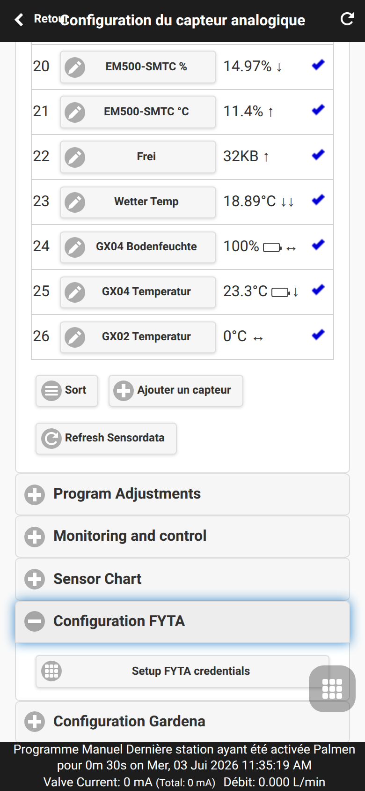
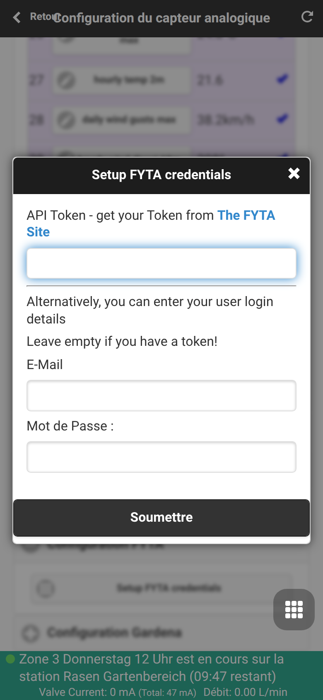
Identifiants
Saisissez le jeton API ou les identifiants requis par votre firmware. Gardez-les privés et mettez-les à jour si l’accès FYTA change.
Association des plantes
Après authentification, associez humidité et température FYTA à des capteurs OpenSprinkler pour les afficher, surveiller et utiliser dans les ajustements.
Configuration Gardena
La configuration Gardena permet la connexion à l’API officielle Gardena Cloud. Cela permet d’importer directement les capteurs intelligents d’humidité du sol et de température de Gardena et de les intégrer à votre logique d'arrosage.
Assistant OAuth Gardena
- Enregistrez-vous sur le portail des développeurs Gardena si nécessaire et créez une application pour obtenir un identifiant client (Client ID) et un secret client (Client Secret).
- Dans le menu OpenSprinkler, ouvrez Options -> Intégrations ou ouvrez l’assistant OAuth Gardena directement dans les options des capteurs analogiques.
- Saisissez vos identifiants. L’assistant vous guidera à travers la connexion OAuth 2.0 et demandera automatiquement le jeton de rafraîchissement (Refresh Token).
- Une fois la connexion établie, les appareils Gardena connectés seront automatiquement découverts.
Mappage des capteurs Gardena
Dans les définitions de capteurs, sélectionnez le type Capteur d’humidité Gardena ou Capteur de température Gardena. Dans l'éditeur, vous pouvez ensuite choisir l'appareil souhaité et sa mesure de données spécifique.
Configuration du capteur JSON distant
Le capteur JSON distant est un type extrêmement flexible conçu pour interroger des API REST arbitraires renvoyant des données au format JSON. Il analyse les réponses à la volée avec une faible surcharge de mémoire.
Champs de l'éditeur
- URL : L'adresse complète HTTP ou HTTPS de l'API (par exemple,
http://api.weather.com/v1/sensor). Maximum 200 caractères. Vous pouvez fournir des paramètres de requête directement dans l'URL (par exemple,http://192.168.1.1/api?pw=123&js=1pour transmettre des clés, des mots de passe ou des identifiants). - Chemin de recherche JSON (Filtre) : Le chemin d'accès à la valeur numérique souhaitée dans le document JSON. Les objets imbriqués sont séparés par une barre verticale (
|) (par exemple,main|tempouroot|sensor_1|humidity).
Spécifications techniques
- Méthode de requête : Seul le protocole standard HTTP-GET est pris en charge.
- Type d'interrogation (Single Data Poll) : Une seule valeur de mesure actuelle est interrogée et analysée à chaque intervalle (les fichiers journaux historiques ou tableaux de données ne sont pas traités par le contrôleur).
- Délai d'attente (Timeout) : Le délai de connexion et de lecture des données est fixé à exactement 3000 millisecondes. Si le point de terminaison ne répond pas dans les 3 secondes, l'interrogation échoue.
- Synchronisation et architecture recommandée : Pour éviter les timeouts et les dépassements de quotas d'API externes (par exemple sur OpenMeteo), il est recommandé d'exécuter un script (via un cronjob) sur un serveur ou routeur local (par exemple sous OpenWrt). Ce script récupère les prévisions externes, applique un filtre lissant (anti-aliasing) et enregistre le résultat dans un fichier JSON statique sur le routeur. OpenSprinkler interroge ensuite ce fichier local statique en quelques millisecondes seulement.
Sauvegarde et restauration
Backup and Restore exporte ou restaure configuration capteurs, ajustements de programme et monitors séparément de la sauvegarde générale.
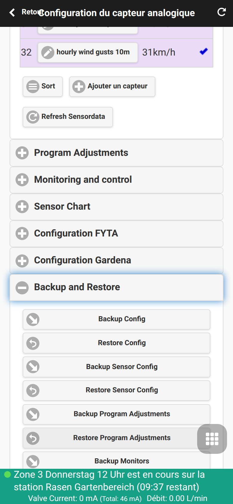
Contenu inclus
Les sauvegardes incluent définitions de capteurs, règles d’ajustement et règles de monitor. Elles ne remplacent pas une sauvegarde complète du contrôleur pour les autres réglages.
Restauration sûre
Exportez une sauvegarde avant de modifier de nombreux capteurs, restaurez seulement des fichiers de confiance et vérifiez les valeurs après restauration avant de réactiver les automatismes.